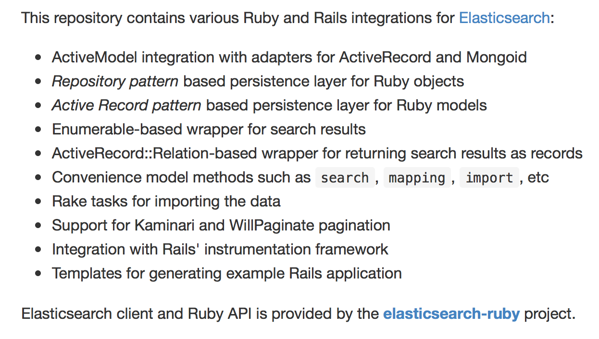
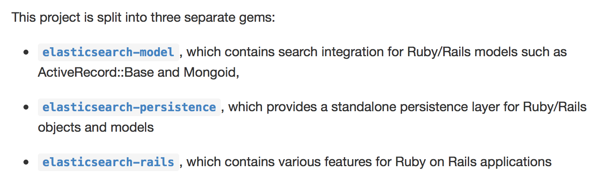
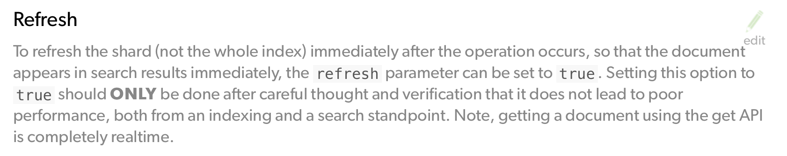

Elasticsearch
on Rails
Vlado Cingel / vlado@cingel.hr
Installation
Installation on OSX
brew install elasticsearchPutting Elasticsearch on Rails
gem install foreman# {Rails.root}/Procfile
web: rails server
eleasticsearch: /path/to/elasticsearch/binaryforeman startRuby libs
- * (Re)Tire
- Renamed and retired in September 2013. Not compatible with Elasticsearch 1.x.
- * elasticsearch-ruby
- Official Ruby client. elasticsearch-transport + elasticsearch-api
- * elasticsearch-rails
- Various Ruby and Rails integrations for Elasticsearch
- * Chewy
- High-level Elasticsearch Ruby framework based on the official elasticsearch-ruby client
elasticsearch-rails
elasticsearch-rails
elasticsearch-rails
Rake tasks# lib/tasks/elasticsearch.rake
require 'elasticsearch/rails/tasks/import'$ rake elasticsearch:import:model CLASS='Article'
$ rake elasticsearch:import:model CLASS='Article' SCOPE='published'# config/application.rb
require 'elasticsearch/rails/instrumentation'Article Search (321.3ms) { index: "articles", type: "article", body: { query: ... } }elasticsearch-persistence
Provides persistence layer for Ruby domain objects
It supports two design patterns for integrating with your objects: Repository and Active Record.
elasticsearch-persistence
Repository
class Note
attr_reader :attributes
def initialize(attributes={})
@attributes = attributes
end
def to_hash
@attributes
end
endrequire 'elasticsearch/persistence'
repository = Elasticsearch::Persistence::Repository.newelasticsearch-persistence
Repository
note = Note.new id: 1, text: 'Test'
repository.save(note)
# PUT http://localhost:9200/repository/note/1
# > {"id":1,"text":"Test"}
# < {"_index":"repository","_type":"note","_id":"1","_version":1,"created":true}
n = repository.find(1)
# GET http://localhost:9200/repository/_all/1
# < {"_index":"repository","_type":"note","_id":"1","_version":2,"found":true, "_source" : {"id":1,"text":"Test"}}
=> <Note:0x007fcbfc0c4980 @attributes={"id"=>1, "text"=>"Test"}>
repository.search(query: { match: { text: 'test' } }).first
# GET http://localhost:9200/repository/_search
# > {"query":{"match":{"text":"test"}}}
# < {"took":2, ... "hits":{"total":1, ... "hits":[{ ... "_source" : {"id":1,"text":"Test"}}]}}
=> <Note:0x007fcbfc1c7b70 @attributes={"id"=>1, "text"=>"Test"}>
repository.delete(note)
# DELETE http://localhost:9200/repository/note/1
# < {"found":true,"_index":"repository","_type":"note","_id":"1","_version":3}
=> {"found"=>true, "_index"=>"repository", "_type"=>"note", "_id"=>"1", "_version"=>2}elasticsearch-persistence
Active Record
class Article
include Elasticsearch::Persistence::Model
# Define a plain `title` attribute
attribute :title, String
# Define a `views` attribute, with default value
attribute :views, Integer, default: 0, mapping: { type: 'integer' }
# Validate the presence of the `title` attribute
validates :title, presence: true
# Execute code after saving the model.
after_save { puts "Successfully saved: #{self}" }
endelasticsearch-persistence
Active Record
article = Article.new
# => #<Article { ... }>
article.valid?
# => false
article.errors.to_a
# => ["Title can't be blank"]Article.create id: 1, title: 'Test', author: 'John'
# PUT http://localhost:9200/articles/article/1 [status:201, request:0.015s, query:n/a]
article = Article.find(1)
# => #<Article { ... }>
article.id
# => "1"
article.title
# => "Test"elasticsearch-model
class Article < ActiveRecord::Base
include Elasticsearch::Model
end
Article.import
response = Article.search("fox dogs")
response.results
# => [#<Elasticsearch::Model::Response::Result:0x007 ... "_source"=>{"title"=>"Quick brown fox"}}>]
response.records.to_a
# Article Load (0.3ms) SELECT "articles".* FROM "articles" WHERE "articles"."id" IN (1, 2)
# => [#<Article id: 1, title: "Quick brown fox">, #<Article id: 2, title: "Fast black dogs">]
In most situation, you'll want to pass the search definition in the Elasticsearch domain-specific language to the client
{
"query" : { "match" : { "title" : "Fox Dogs" } },
"highlight" : { "fields" : { "title" : {} } }
}response = Article.search(
query: { match: { title: "Fox Dogs" } },
highlight: { fields: { title: {} } }
)
response.results.first.highlight.title
# ["Quick brown <em>fox</em>"]Index configuration
class Article < ActiveRecord::Base
include Elasticsearch::Model
index_name: "articles-#{Rails.env}"
settings index: { number_of_shards: 1 } do
mappings dynamic: 'false' do
indexes :title, analyzer: 'english', index_options: 'offsets'
end
end
...
endAutomatic Callbacks
class Article < ActiveRecord::Base
include Elasticsearch::Model
include Elasticsearch::Model::Callbacks
endArticle.first.update_attribute :title, 'Updated!'
Article.search('*').map { |r| r.title }
# => ["Updated!", "Lime green frogs", "Fast black dogs"]Model serialization
Method as_indexed_json is defined automatically by the Elasticsearch::Model::Serializing module.
Just implement the as_indexed_json yourself to define custom serialization
class Article
include Elasticsearch::Model
def as_indexed_json(options={})
{ title: "title", author: author.name }
end
endPersonal experience
# app/models/physician.rb
class Physician < ActiveRecord::Base
include Elasticsearch::Model
ANALYSIS_SETTINGS = { ... }
index_name "appname-physicians-#{Rails.env}"
after_commit :refresh_elasticsearch_index
settings index: { analysis: ANALYSIS_SETTINGS } do
mappings dynamic: false do
indexes :first_name, index_analyzer: "autocomplete", search_analyzer: "standard"
indexes :last_name, index_analyzer: "autocomplete", search_analyzer: "standard"
# ...
end
end
def as_indexed_json(options: {})
{
id: id,
first_name: first_name,
primary_specialization_name: primary_specialization.name
# ...
}
end
endFeature Extraction Pattern
# app/models/physician/elastically_searchable.rb
class Physician
module ElasticallySearchable
extend ActiveSupport::Concern
included do
include Elasticsearch::Model
ANALYSIS_SETTINGS = { ... }
index_name "appname-physicians-#{Rails.env}"
after_commit :refresh_elasticsearch_index
# ...
end
def as_indexed_json(options: {})
# ...
end
end
end# lib/elasticsearch_support.rb
module ElasticsearchSupport
end# lib/elasticsearch_support/elastically_searchable_active_record.rb
module ElasticsearchSupport
module ElasticallySearchableActiveRecord
extend ActiveSupport::Concern
included do
include Elasticsearch::Model
# ...
end
end
end# app/models/physician/elastically_searchable.rb
class Physician
module ElasticallySearchable
extend ActiveSupport::Concern
include ElasticsearchSupport::ElasticallySearchableActiveRecord
# ...
end
Custom callbacks
# lib/elasticsearch_support/elastically_searchable_active_record.rb
module ElasticsearchSupport
module ElasticallySearchableActiveRecord
extend ActiveSupport::Concern
included do
include Elasticsearch::Model
after_commit :refresh_in_elasticsearch, on: [:create, :update]
after_commit :remove_form_elasticsearch, on: :destroy
end
def elastically_searchable?
fail NotImplementedError.new("You must define 'elastically_searchable?' method")
end
private
def refresh_in_elasticsearch
ElasticsearchSupport::RefreshDocumentJob.perform_later(self)
end
def remove_form_elasticsearch
# Do not use ActiveJob here
__elasticsearch__.delete_document
end
end
end# app/models/physician/elastically_searchable.rb
class Physician
module ElasticallySearchable
def elastically_searchable?
active? && public?
end
end
endActiveJob to refresh document index
# lib/elasticsearch_support/refresh_document_job.rb
module ElasticsearchSupport
class RefreshDocumentJob < ActiveJob::Base
queue_as :default
def perform(rec)
if rec.elastically_searchable?
update_in_elasticsearch(rec)
else
remove_from_eleasticsearch(rec)
end
end
private
def remove_from_eleasticsearch(rec)
rec.__elasticsearch__.delete_document
rescue Elasticsearch::Transport::Transport::Errors::NotFound
# document wasn't found, so don't bother removing it again
end
def update_in_elasticsearch(rec)
rec.__elasticsearch__.update_document
end
end
endOne class per search
# app/models/physician/search_to_recommend.rb
class Physician
class SearchToRecommend
def call(inquiry, query)
Physician.__elasticsearch__.search(
query: {
filtered: {
query: query_hash(query),
filter: filter_hash(inquiry)
}
},
highlight: highlight_hash
)
end
private
def query_hash(query)
# logic to return q hash
end
def filter_hash(inquiry)
# logic to return filter hash
end
end
endReindex
# lib/elasticsearch_support/elastically_searchable_active_record.rb
module ElasticsearchSupport
module ElasticallySearchableActiveRecord
included do
scope "elastically_searchable", -> {
fail NotImplementedError.new("You must define 'elastically_searchable' class method")
}
end
end
end# app/models/physician/elastically_searchable.rb
class Physician
module ElasticallySearchable
included do
scope "elastically_searchable", -> { where(state: "active") }
end
end
endREINDEX
# lib/elasticsearch_support/reindex_records.rb
module ElasticsearchSupport
class ReindexRecords
def call(klass)
@klass = klass
@index_name = [@klass.index_name, start_time.to_s(:number)].join("_")
create_index!
import_records!
create_alias!
end
private
def client
@klass.__elasticsearch__.client
end
end
endElasticsearchSupport::ReindexRecords.new.call(Physician)REINDEX
# lib/elasticsearch_support/reindex_records.rb
module ElasticsearchSupport
class ReindexRecords
def create_index!
@klass.__elasticsearch__.create_index!(index: @index_name, force: true)
end
end
endREINDEX
# lib/elasticsearch_support/reindex_records.rb
module ElasticsearchSupport
class ReindexRecords
def import_records!
@klass.elastically_searchable.find_in_batches(batch_size: 1000) do |group|
group_for_bulk = group.map do |record|
{ index: { _id: record.id, data: record.as_indexed_json } }
end
client.bulk(index: @index_name, type: @klass.to_s.underscore, body: group_for_bulk)
end
end
end
endREINDEX
# lib/elasticsearch_support/reindex_records.rb
module ElasticsearchSupport
class ReindexRecords
def create_alias!
client.indices.put_alias(index: @index_name, name: @klass.index_name)
delete_old_aliases!
end
end
endReindex problem
Reindex problem
Changes during reindex are lost
Reindex Fix
# lib/elasticsearch_support/reindex_records.rb
module ElasticsearchSupport
class ReindexRecords
def call(klass)
@klass = klass
@index_name = [@klass.index_name, start_time.to_s(:number)].join("_")
# Start monitoring and persist changes during reindex
ElasticsearchSupport::ReindexUpdaterStore.start(@klass)
create_index!
import_records!
create_alias!
# Stop monitoring and update records changed during reindex
ElasticsearchSupport::ReindexUpdaterStore.stop(@klass)
end
end
endReindex Fix
# lib/elasticsearch_support/refresh_document_job.rb
module ElasticsearchSupport
class RefreshDocumentJob < ActiveJob::Base
queue_as :default
def perform(rec)
# ...
ElasticsearchSupport::ReindexUpdaterStore.store(record.class, record.id)
end
end
endTesting Elasticsearch
Test server
- * Development server
- No special setup needed, make sure you use Rails env in index name
- * Elasticsearch::Extension::Test
- Ruby class for starting and stopping a separate testing in-memory cluster. Few simple steps to setup, should be faster
# spec/support/elasticsearch_test_helpers.rb
module ElasticsearchTestHelpers
# helpers will be defined here
end# spec/spec_helper.rb
RSpec.configure do |config|
config.include ElasticsearchTestHelpers
config.before(:each) do
if self.class.metadata[:elasticsearch]
prepare_elasticsearch
else
stub_elasticsearch
end
end
end# spec/support/elasticsearch_test_helpers.rb
def stub_elasticsearch
stub_request(:any, /.*localhost:9200\/.*/).to_return(body: "{}")
end# spec/support/elasticsearch_test_helpers.rb
def prepare_elasticsearch
Physician.__elasticsearch__.create_index!(force: true)
endrequire "spec_helper"
describe "Physician", :elasticsearch do
it "does something" do
physician = Physician.create({})
expect(physician).to be_indexed_in_elasticsearch
end
endQuick Fix
require "spec_helper"
describe "Physician", :elasticsearch do
it "does something" do
physician = Physician.create({})
sleep 1
expect(physician).to be_indexed_in_elasticsearch
end
endQuick Fix 2
require "spec_helper"
describe "Physician", :elasticsearch do
it "does something" do
physician = Physician.create({})
sleep 2
expect(physician).to be_indexed_in_elasticsearch
end
endQuick Fix 3
require "spec_helper"
describe "Physician", :elasticsearch do
it "does something" do
physician = Physician.create({})
sleep 3
expect(physician).to be_indexed_in_elasticsearch
end
endHammer Fix
# spec/support/elasticsearch_test_helpers.rb
module ElasticsearchTestHelpers
def prepare_elasticsearch
# ...
$physicians_to_index = []
end
def make_sure_physician_changes_are_indexed(&block)
track_physicians_to_index
perform_enqueued_jobs { block.call }
wait_for "elasticsearch to reindex physicians", wait_time: 5.seconds do
indexed_ids = Physician.__elasticsearch__.search(
query: { match_all: {} }
).map { |res| res._id.to_i }
$physicians_to_index.uniq.sort == indexed_ids
end
end
private
def track_physicians_to_index
return if Physician._commit_callbacks.map(&:filter).include?(:register_elasticsearch_index_state)
Physician.class_eval do
after_commit :register_elasticsearch_index_state
private
def register_elasticsearch_index_state
action = elastically_searchable? ? :push : :delete
$physicians_to_index.send(action, id)
end
end
end
endFixed with Hammer
require "spec_helper"
describe "Physician", :elasticsearch do
it "does something" do
make_sure_physician_changes_are_indexed do
physician = Physician.create({})
end
expect(physician).to be_indexed_in_elasticsearch
end
endREAL FIX
Elasticsearch Index API has Refresh option
https://www.elastic.co/guide/en/elasticsearch/reference/current/docs-index_.html#index-refresh
REAL FIX
# lib/elasticsearch_support/refresh_document_job.rb
module ElasticsearchSupport
class RefreshDocumentJob < ActiveJob::Base
queue_as :default
def perform(rec)
# ...
end
private
def refresh
Rails.env.test?
end
def remove_from_eleasticsearch(rec)
rec.__elasticsearch__.delete_document(refresh: refresh)
rescue Elasticsearch::Transport::Transport::Errors::NotFound
# document wasn't found, so don't bother removing it again
end
def update_in_elasticsearch(rec)
rec.__elasticsearch__.update_document(refresh: refresh)
end
end
endTHANK YOU!